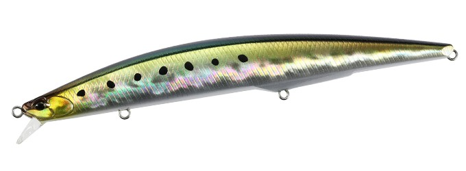
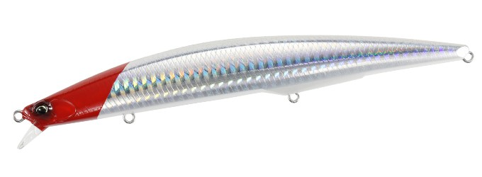
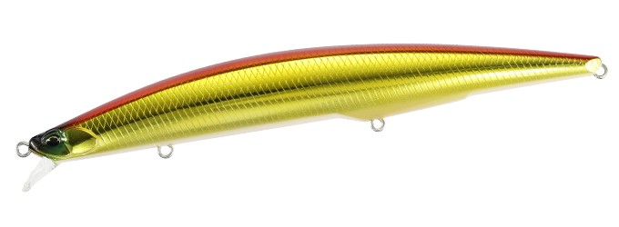
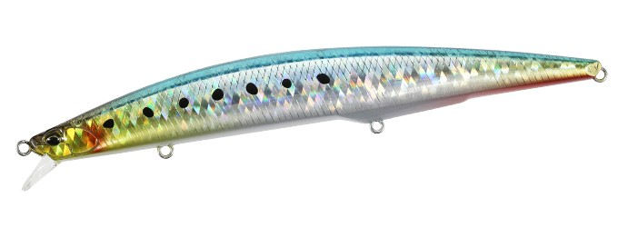

タイドミノースリム148F
（Tide Minnow Slim 148F）
タイドミノースリム148Fは、DUOの定番シーバスミノー「タイドミノースリム」シリーズの新しいモデルです。
磁力で重心を瞬時に前へ戻す新機構「MLS（マグランチャーシステム）」を初めて搭載。遠くまで飛ばしても、着水直後からすぐに泳ぎ出すのが最大の特徴です。

画像出典:DUO公式HP
スペック
- メーカー
- DUO（デュオ）
- 全長
- 148mm
- 自重
- 22g
- タイプ
- 重心移動（D-バレットシステム×MLS）・フローティング
- レンジ
- 0.5〜0.8m
- フック
- #5
- リング
- #2.5
- カラー
- 全10色
- ターゲット
- シーバス
- 価格
- 2,970円（税込）
- 発売
- 2026年11月
▼今すぐチェック

タイドミノースリム148Fの特徴
磁力で重心が瞬時に戻る「MLS」で、飛距離と泳ぎ出しを両立
-
磁力で重心を戻すMLS（マグランチャーシステム）
キャスト時は高比重ウェイトが後ろへ動いて飛距離を出し、着水すると背中側とシャフト後部の高磁力磁石が引き合って、ウェイトを瞬時に前へ戻す。着水直後から安定して泳ぎ出し、着水直後のバイトチャンスを逃さない。
-
スローでもファストでも破綻しないウォブンロール
スローに巻けばしっかり水をつかみ、速く巻いても泳ぎが崩れにくい安定したウォブンロール。ただ巻きからジャークまで、いろいろな使い方に対応する。
-
レンジ0.5〜0.8mのシャロー設定
水面直下から少し下の0.5〜0.8mを泳ぐ。河口や干潟、サーフの浅いエリアで、根掛かりを気にせず広く探れる。
タイドミノースリム148Fの使い方
基本はキャストしたらすぐに巻き始めるただ巻きです。MLSで着水直後から泳ぎ出すので、着水した瞬間から巻いてアピールしましょう。
流れのある場所では、流れに乗せて横切らせるドリフトも効果的です。反応がないときは、ジャークを入れて動きに変化をつけてみましょう。
タイドミノースリム148Fの得意な状況
河口や干潟、サーフなど、浅いエリアでシーバスを狙う場面で出番です。
148mmのボリュームあるシルエットで、イワシやコノシロなど大きめのベイトを追うシーバスにも効きます。遠くの浅いポイントまで届いて、着水直後から食わせられるのが強みで、沖でボイルが起きている時にも釣れるミノーです。
ワンポイント
着水直後は一番バイトが多いタイミングです。着水と同時にラインのたるみを取って巻き始めるように意識すると、MLSの泳ぎ出しの速さを最大限に生かせます。
タイドミノースリムシリーズの使い分け
| モデル | 全長／自重 | 得意な場面 |
|---|---|---|
| 120 | 120mm／13g | シリーズの原点・フローティング・レンジ0.6〜1.0m |
| 140 | 140mm／18g | サーフゲームで人気のセカンドモデル・フローティング |
| 140 FLYER | 140mm／21g | 飛距離特化のシンキング・レンジ0.8〜1.1m |
| 148F | 148mm／22g | MLS搭載・フローティング・レンジ0.5〜0.8m（本記事のモデル） |
| 175 | 175mm／27g | ロングミノー・フローティング・レンジ0.8〜1.3m |
| 175 FLYER | 175mm／29g | ロングボディの飛距離特化シンキング |
| 178F | 178mm／32g | MLS搭載・大型ベイト×遠投・浅めのレンジ |
| 200 | 200mm／27g | 超ロングシルエット・フローティング・レンジ0.3〜0.8m |
タイドミノースリムは120mmから200mmまで幅広いサイズと、フローティング／FLYER（シンキング）の展開があるシリーズ（ほかに200 FLYERもラインナップ）。MLSを搭載した148F・178Fは、着水直後から泳ぎ出す新世代モデルという位置づけだ。迷ったら、扱いやすいサイズの148Fから始めるのがおすすめ。
人気カラー
タイドミノースリム148Fの人気カラーを紹介します。

テイスティイワシイワシを食べている時の定番ナチュラルカラー。

レッドヘッドホロ定番のレッドヘッド。にごりや夜にもよく目立つ。

アカキン赤と金のアピールカラー。にごりや朝夕のマズメに。

シャイニングイワシ強いフラッシングのイワシカラー。晴れた日中に。
画像出典:DUO公式HP
▼今すぐチェック
タイドミノースリム148Fに似ているルアー
-
 ブローウィン140F
ブルーブルー
詳細はこちら＞
ブローウィン140F
ブルーブルー
詳細はこちら＞
サーフで人気のフローティングミノー。飛距離と浅いレンジの探りやすさが近い。
-
 ナバロン150F
アイマ
詳細はこちら＞
ナバロン150F
アイマ
詳細はこちら＞
150mmのフローティングミノー。サイズが近く、大きめのベイトに合わせやすい。
-
 サスケ140S真裂風
アイマ
詳細はこちら＞
サスケ140S真裂風
アイマ
詳細はこちら＞
アクションを抑えたシンキングミノー。より遠く・深くを探りたい時に。